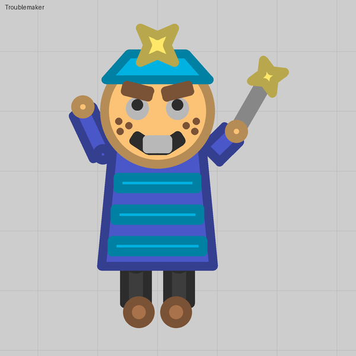
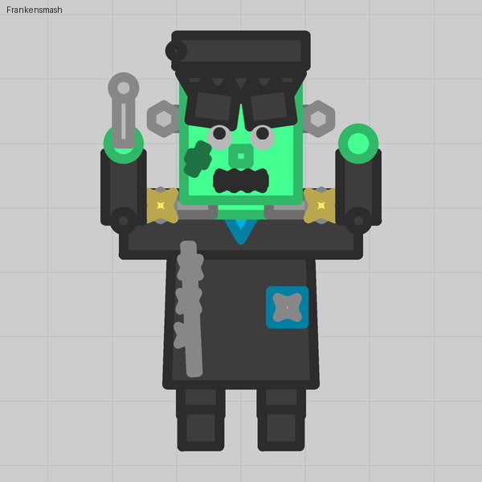

Spinning parts and a pulsing light
Spin speed turns a part on its own, and two stars spinning against each other read as a light that pulses.
What you see
A gear that turns and a lantern that pulses. Neither fires anything, and neither costs a barrel: they are plain parts with Spin speed set.
The trick
Spin speed on a part is rotation per tick, 25 ticks a second: 0.05 is about one turn every five seconds, 0.5 is the slider's end. The editor's preview does not animate, so you only see it in play.
The pulse is a discovery a skill user sent in: put two star parts on the same spot, a bigger darker one under a smaller lighter one of the same hue, and give them equal and opposite Spin speed. When their spokes line up they look like one bright star; half a spoke later they interleave into a dimmer, rounder blob. The eye reads it as a light beating.
Numbers that matter
| Spokes | Spin speed | Beat |
|---|---|---|
| 3 | ±0.05 | about once a second: a lantern, a heartbeat |
| 3 | ±0.12 | a flicker |
| 6 | ±0.05 | twice a second |
Beat period in seconds is (360° ÷ spokes) ÷ (2 × spin × 25 × 57.3). Three or six spokes read as light; four looks mechanical.
Gotchas
- Both stars need exactly the same Offset X and Offset Y, and the smaller one must be the higher layer.
- Give the stars their own colours. On Team color the pulse would change with the team.
- Auto rotate under Movement and durability spins the body itself; the barrels and your aim stay put.
Where we used it

